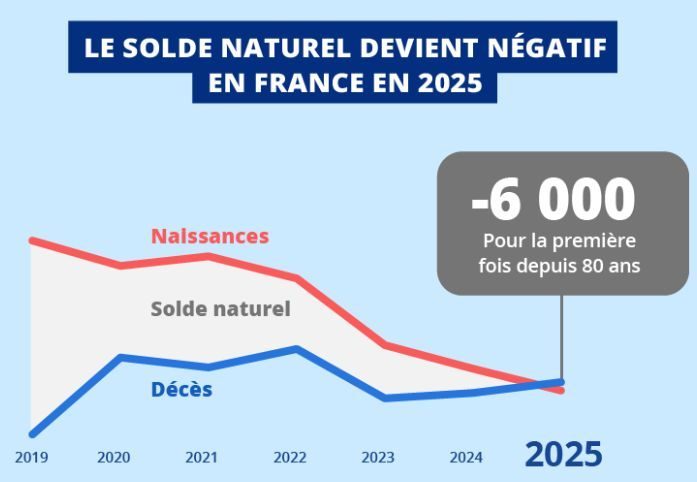

PER : versez avant le 31 décembre pour réduire vos impôts
Plafonds 2026, économie selon votre tranche, nouveautés de la loi de finances et contreparties : ce qu'il faut savoir avant de verser.
Lire l'article →Dispositif Jeanbrun : le nouveau statut du bailleur privé
Amortir jusqu'à 5,5 % par an un logement loué nu : ce que change le successeur du Pinel, et le piège de la revente.
Lire l'article →La BCE remonte ses taux : qu'est-ce que ça change pour votre épargne ?
Livret A, assurance-vie, PER : ce que la hausse des taux change concrètement et les opportunités à saisir.
Lire l'article →Règle des 4 % : quel capital faut-il pour votre retraite ?
La règle des 4 % permet d'estimer le capital nécessaire pour compléter sa pension. Origine, calcul et limites.
Lire l'article →Courbe de Friggit : l'immobilier français est-il surévalué en 2026 ?
La courbe de Friggit révèle des signaux importants sur le marché immobilier français. Décryptage pour vos investissements patrimoniaux.
Lire l'article →PER : comment réduire ses impôts tout en préparant sa retraite ?
Le Plan d'Épargne Retraite est l'un des rares dispositifs qui combine avantage fiscal immédiat et préparation de la retraite.
Lire l'article →Assurance emprunteur : ce que change la loi Lemoine
Depuis 2022, vous pouvez changer d'assurance de prêt à tout moment. Comment en profiter et combien économiser ?
Lire l'article →5 erreurs courantes en gestion de patrimoine
Épargne mal placée, fiscalité subie, transmission non anticipée... Les pièges les plus fréquents et comment les éviter.
Lire l'article →77 % des Français estiment que le travail ne paie plus
Un sondage Elabe révèle un sentiment massif : l'investissement est jugé plus efficace que « travailler plus » pour améliorer son niveau de vie.
Lire l'article →
Démographie française : un signal fort pour la retraite
Le solde naturel devient négatif en France pour la première fois depuis 80 ans. Quelles conséquences pour votre retraite ?
Lire l'article →PEL : une nouvelle ère à partir de 2026
Dès mars 2026, certains PEL seront clôturés automatiquement. 39 milliards d'euros à réallouer. Comment réinvestir ?
Lire l'article →Biais cognitifs : ce que vos émotions vous coûtent en investissement
Finance comportementale : les biais qui sabotent vos décisions d'investissement et comment les surmonter.
Lire l'article →GFI : investir dans la forêt, un placement qui a du sens
Actif tangible, avantage fiscal et engagement écologique : le Groupement Forestier d'Investissement séduit de plus en plus.
Lire l'article →Assurance-vie : fiscalité avant et après 70 ans
La fiscalité de l'assurance-vie change radicalement après 70 ans. Abattement de 152 500 € vs 30 500 €. Comment optimiser.
Lire l'article →Livret A : votre épargne bientôt orientée vers la défense ?
Le Sénat a voté le fléchage d'une partie de l'épargne du Livret A vers l'industrie de la défense. Quel impact pour vous ?
Lire l'article →Loi Sapin 2 : l'État peut-il bloquer votre épargne ?
La Loi Sapin 2 permet à l'État de geler les fonds en euros en cas de crise. Comment protéger votre patrimoine ?
Lire l'article →Investissement durable et ESG : allier performance et impact
Comment aligner vos placements avec vos convictions sans compromettre le rendement. Guide complet.
Lire l'article →Saison des impôts : les leviers pour payer moins
Dons, FIP/FCPI, PER, revenus locatifs... Les principaux leviers pour réduire votre imposition légalement.
Lire l'article →SCPI : pourquoi c'est le bon moment pour investir
Les SCPI offrent stabilité, rendement et diversification. Avec la baisse des prix, les rendements augmentent.
Lire l'article →3 solutions pour placer son épargne en limitant les risques
Fonds en euros, produits structurés à capital protégé, Girardin Industriel : ce qu'ils rapportent et leurs contreparties.
Lire l'article →